JJ Premier Group · home page · Wave 2 design
The sections after the hero, made to feel alive.
The client's note on sections 03, 04 and 05: well designed but sterile, blocks of text, especially What we do. Every treatment below keeps the same copy, the same links and live facts, the same section numbers and grounds as main, and uses only the site's own system: library photography, the display serif, mono eyebrows, hairlines, paper and parchment. Each screenshot is a 1440 desktop capture with its 390 phone capture beside it (click to open at full size). The outlined card in each row is the one shipped on wave2-design; the others stay in components/home/variants/ behind a one-line default. The shipped cards also carry the captures the review asked for (the doors at 768, 1024 and 1280, the Both-get cards at 390, the product band at 768), taken after the review fixes.
04 · What we do for you
Plain (Wave 0, for comparison)
Two columns of numbered steps on paper. Correct, and the part the client called a block of text.

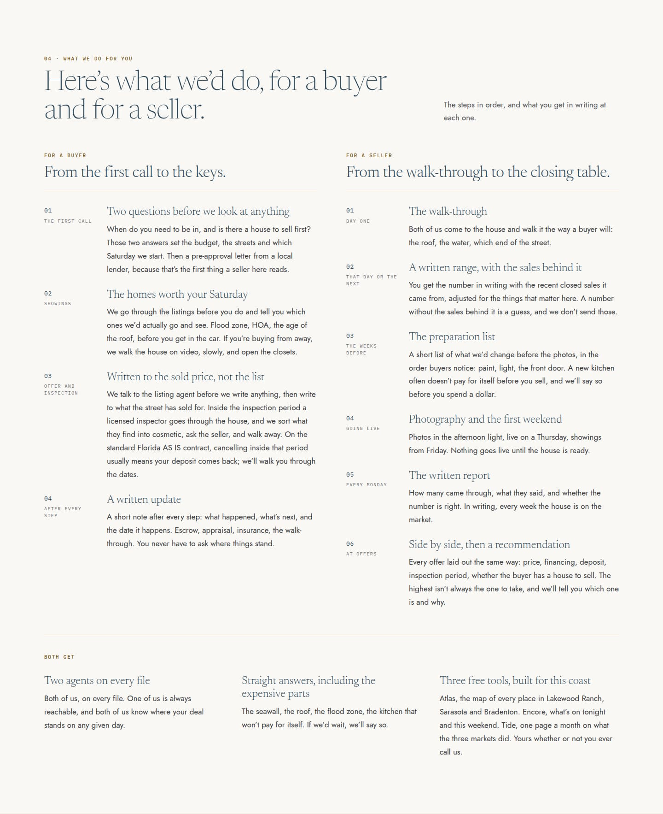

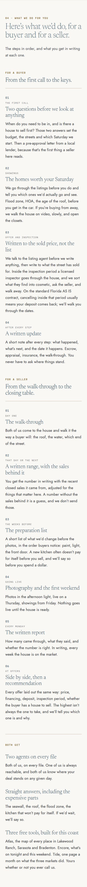
Photo-led
Each column opens with a tall moment photograph carrying its own heading, the steps follow with the numeral set large in the serif, and "Both get" closes as a navy band. Strong opener, but the images front-load and the steps return to a text wall below them.

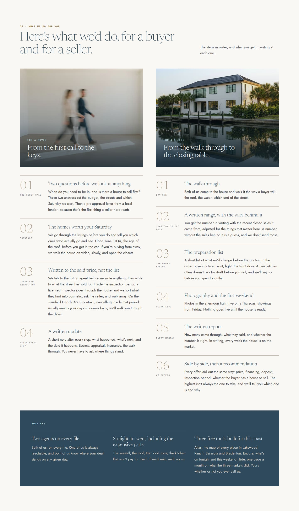

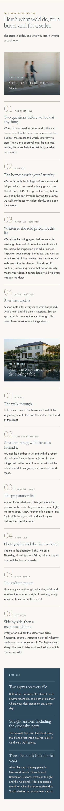
Editorial timeline Shipped
A rail per column with a square tick and mono numeral at each step; photographs are let into the rail where the story turns (showings, the keys; the house seen from above, the first weekend), and "Both get" is three photo-backed cards. The steps read as a sequence instead of a list, on desktop and as a scroll story on phones.
After review: each tile renders inside the step it follows (the lists count 4 and 6), the two-agents card carries the team's own photograph and the walk-through tile an aerial of a lot so no picture repeats the doors, the Both-get cards are 2:1 on phones with white body text over a deeper shade, and every picture is sized to its drawn crop.

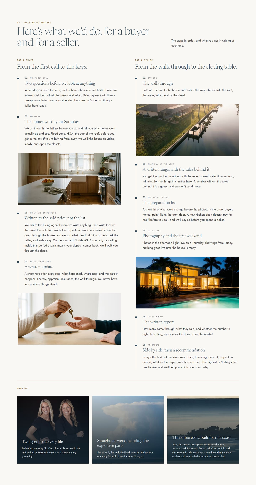

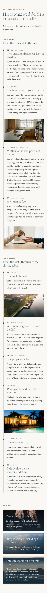

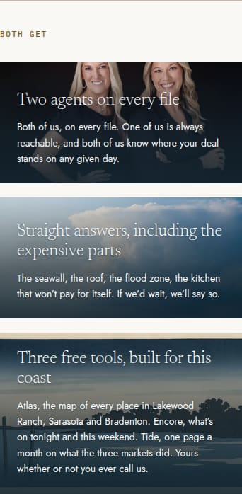
Magazine spread
A full-bleed aerial carries the heading and the two columns come up over its lower edge as white cards, step titles set as italic pull quotes. Handsome, but a second full-bleed photograph three sections after the hero competes with it, and the white cards sit low-contrast on paper.

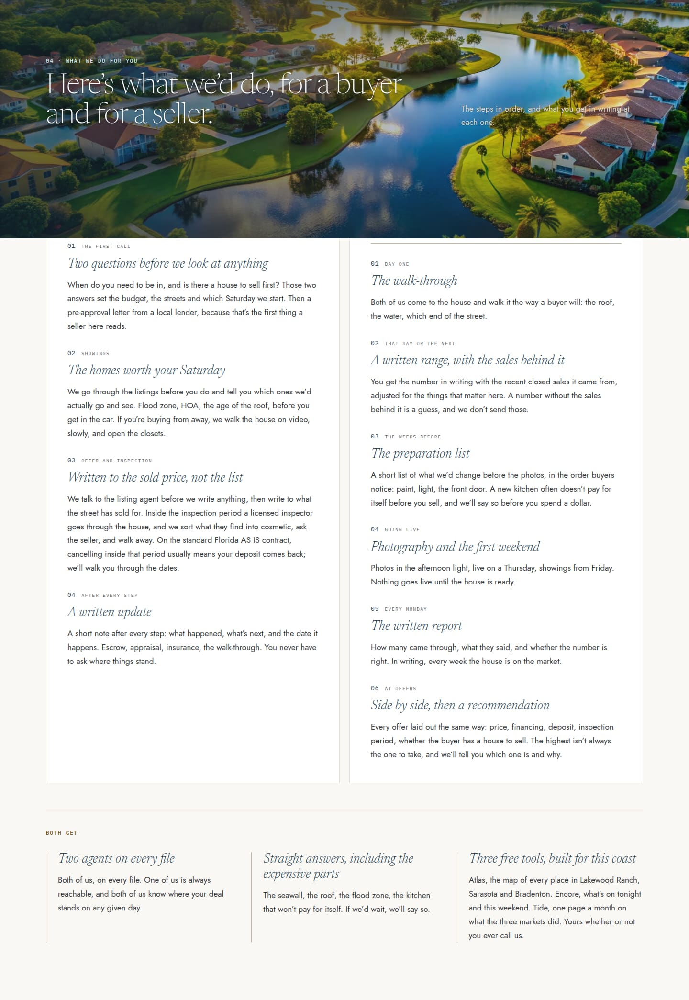

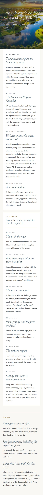
03 · Buy or sell
Plain (Wave 0, for comparison)
Two white text cards on parchment with a rule that draws on hover.

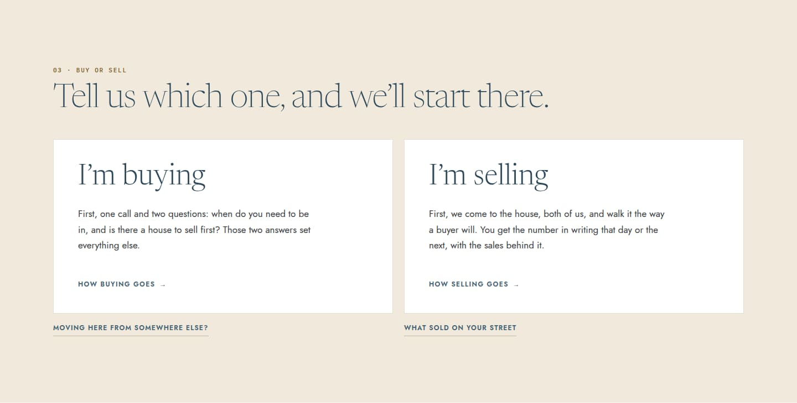

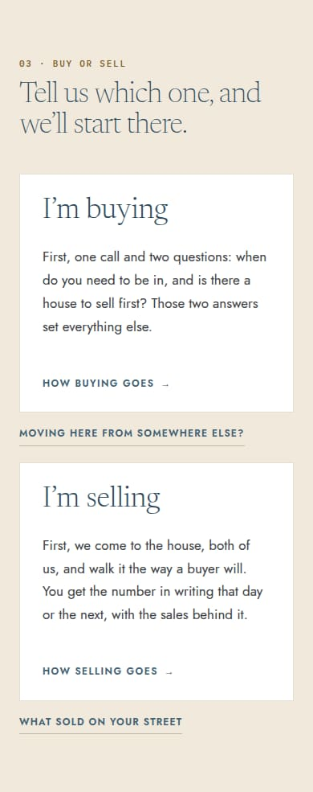
Photo doors Shipped
Each door is a split card: the moment on the left leaf (walking into the empty room; the house the way a buyer sees it) with the door's name set over it, the one line and the way in on the right. The photograph eases 3.5% on hover and the Sky rule draws, the same card grammar as the rest of the site; on phones the photograph sits above the words.
After review: the doors run one per row until 1024 (the split needs about 540px of door), sit two per row from 1024 with the photograph above the words until 1279, and split again from 1280; the heading holds on one line at every width, and the photograph is decorative so the link is named by its heading.

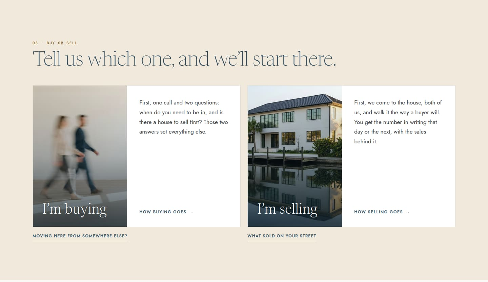

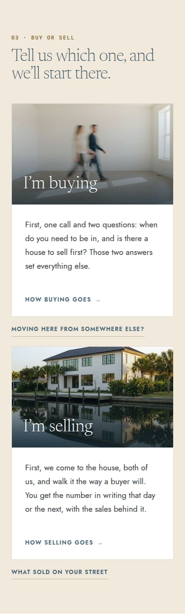


05 · Atlas, Encore and Tide
Plain (Wave 0, for comparison)
Three white cards with an accent tick, the constellation small inside the Atlas card.

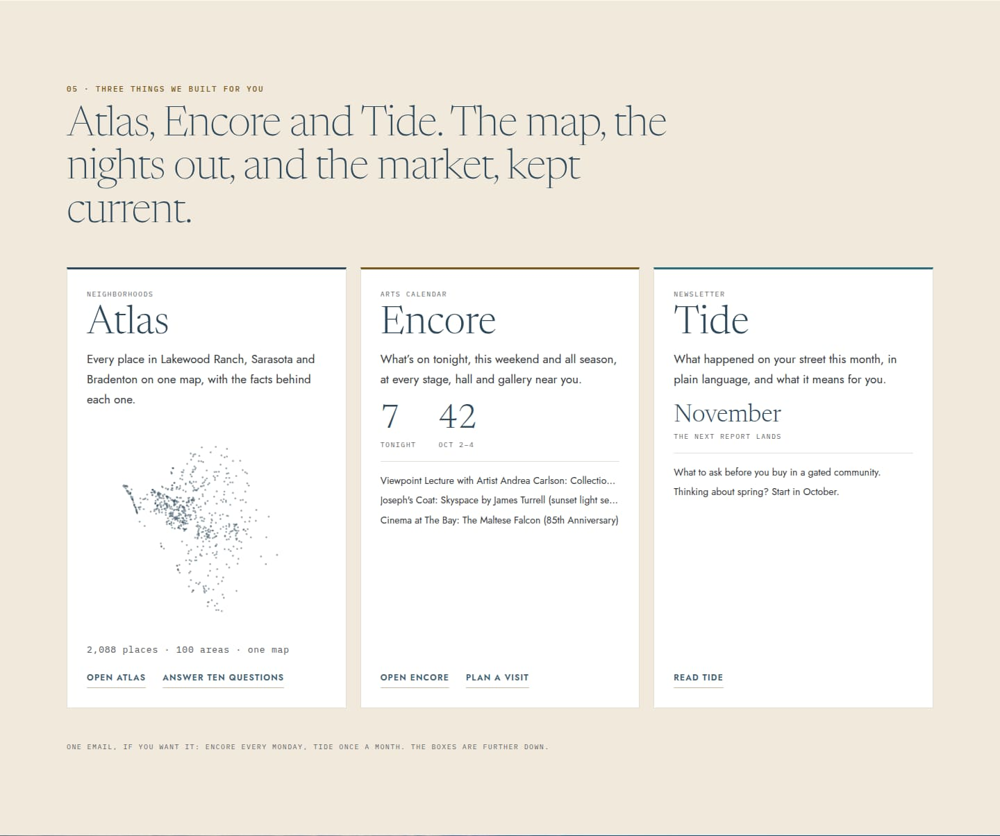

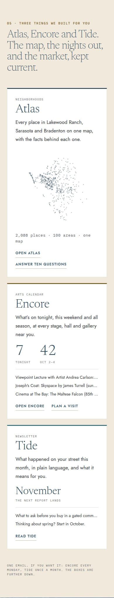
Pictures Shipped
Each card opens with its own picture, all drawn in code: the constellation of every place on linen with a graticule for Atlas, the calendar's own key art for Encore, and a newsletter page in hairlines under a masthead rule for Tide. Names, lines, live facts and links are untouched.
After review: the heads are 3:2 (2:1 where the cards stack full width at the tablet), the Tide page's hairlines spread to fill its head, and the Encore key art is hidden from assistive technology. The Tide line now reads "What the three markets did last month…" so the page does not repeat one sentence three times.

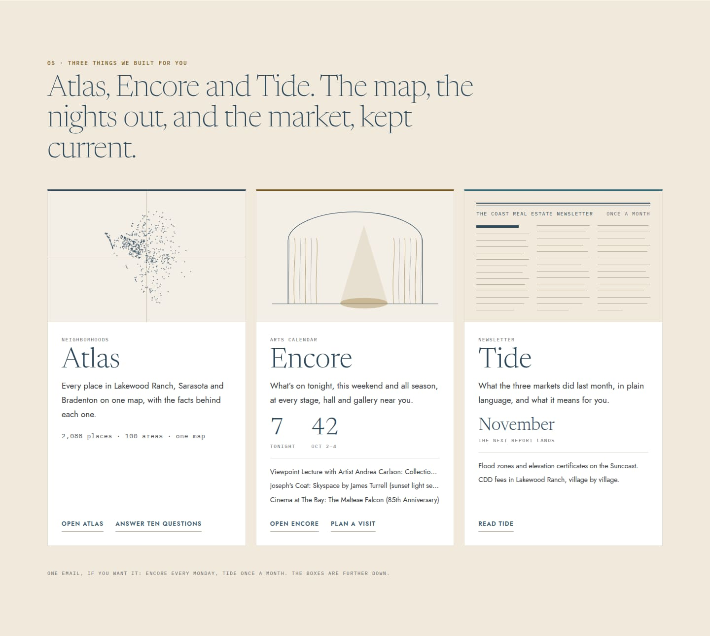

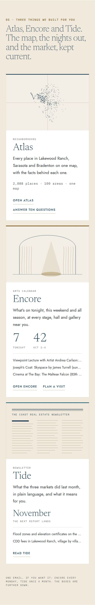

The home page as shipped
Full-length captures of the branch's default after the review fixes: photo doors, the timeline, the pictures band, on main's section numbers and alternating grounds, with main's guides on the Tide card.